Three distinct trend directions shaping ties, scarves, and neckwear for the season — each aligned with a broader narrative from the S/S 27 accessories forecast.
Rich, decorative, and bohemian. The Ornate direction celebrates maximalist pattern-making — geometric jacquards, foulard prints, and paisley motifs draped over open collars. Statement scarves replace the traditional tie in casual dress settings, while bold geometric ties anchor the look for tailored occasions. Inspired by artisan craft and Mediterranean warmth.
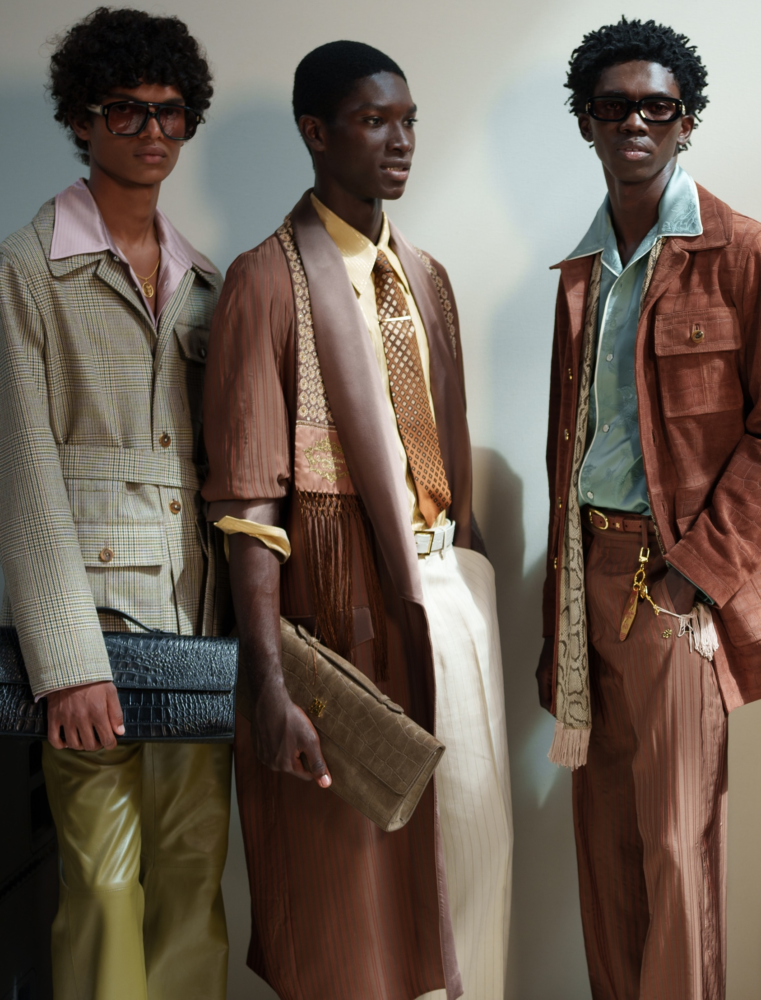
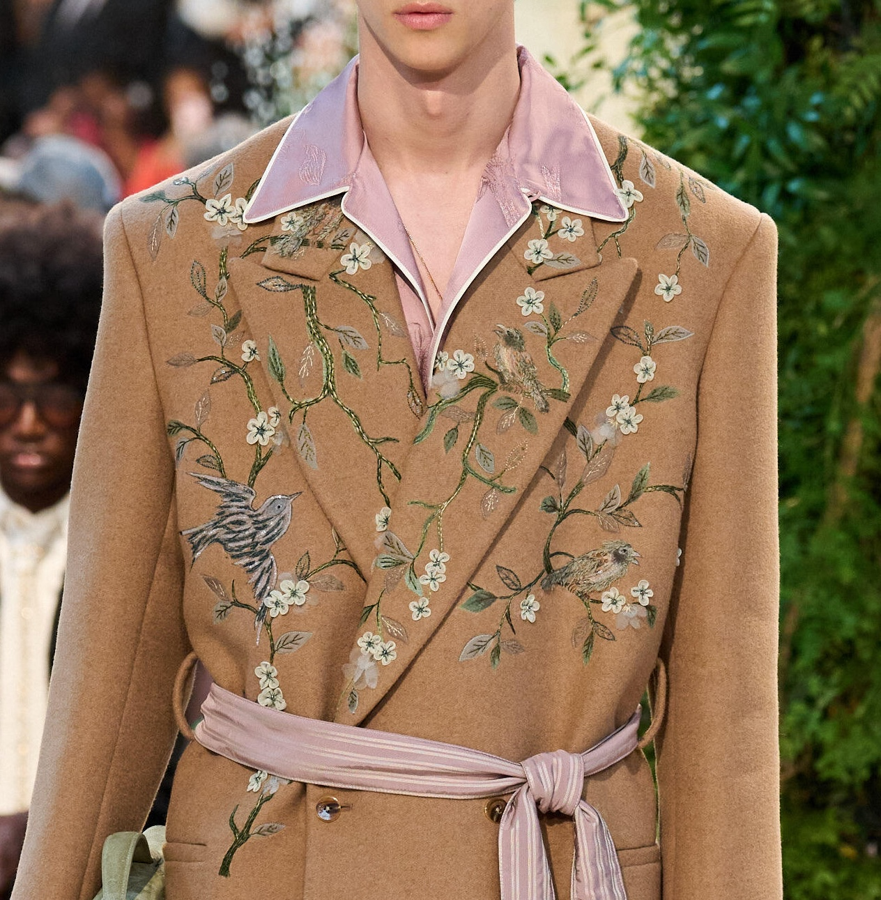
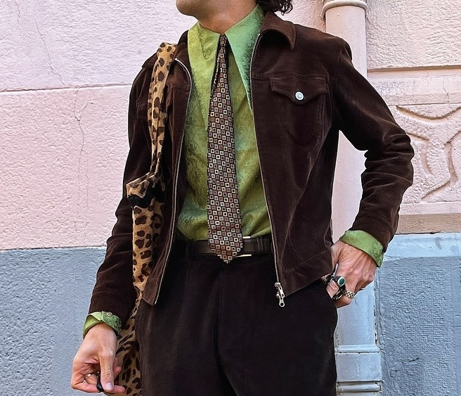
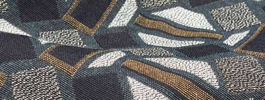
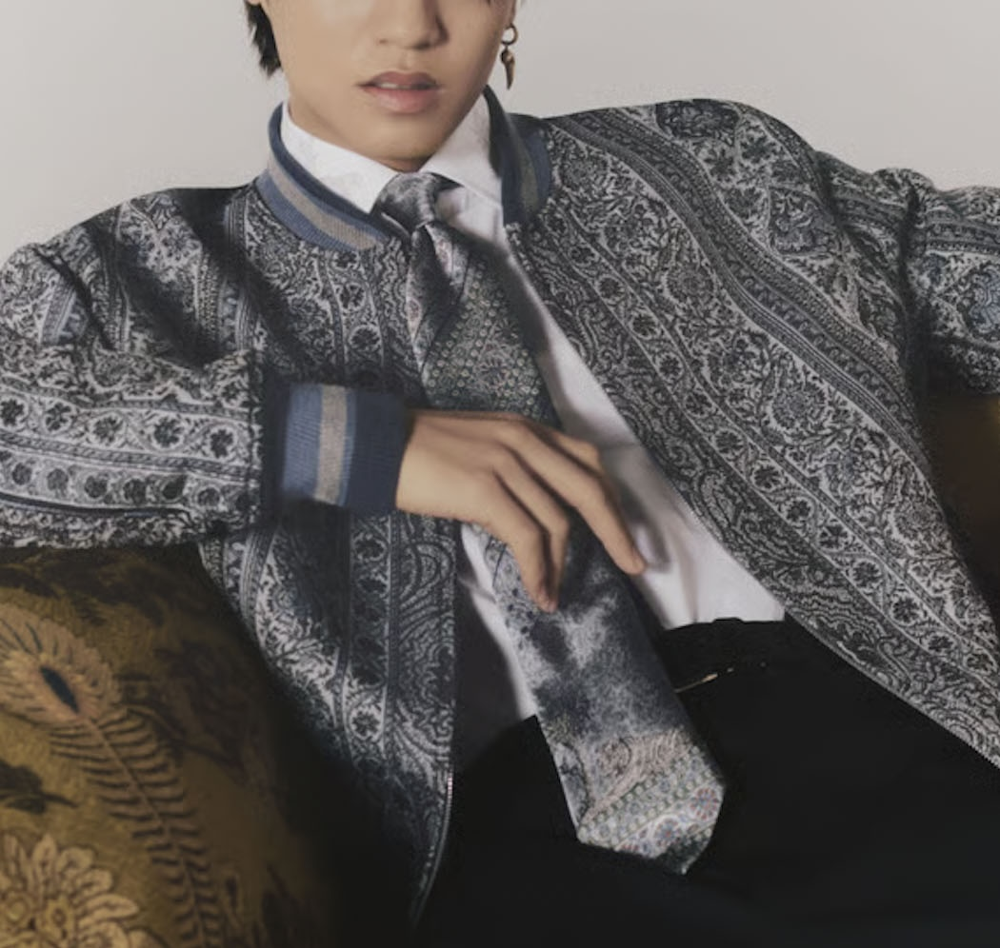
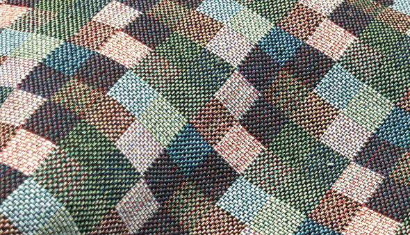
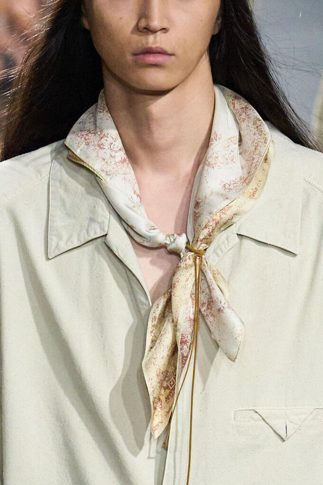
Bold, nostalgic, and unapologetically preppy. The Prep direction brings back the Power Tie at 7.5–8.5cm — a wider silhouette echoing 80s tailoring. Classic repp stripes, tartan plaids, and varsity-inspired patterns in high-energy colour. Styled with pinstripe blazers, oxford shirts, and leather jackets for a new take on campus heritage.
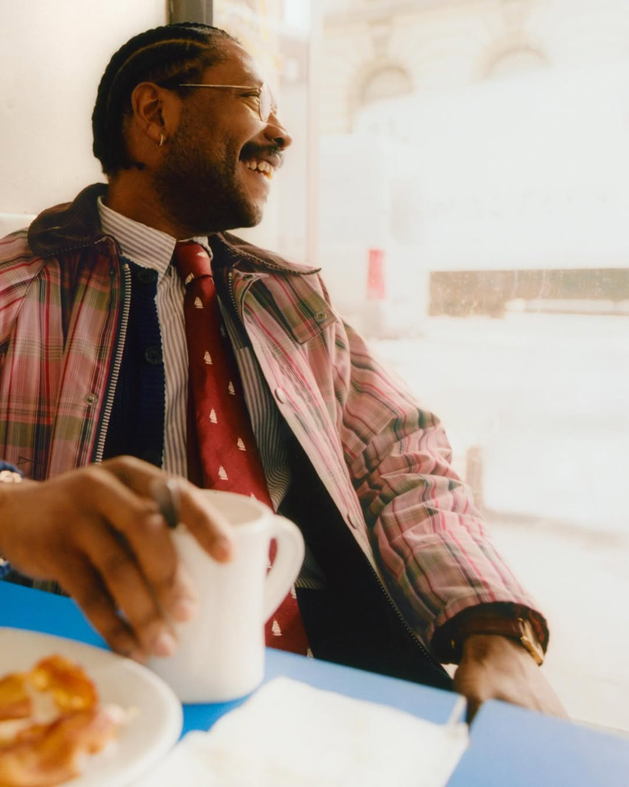
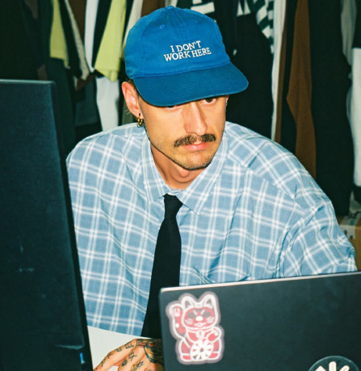
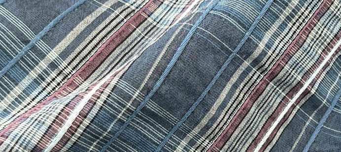
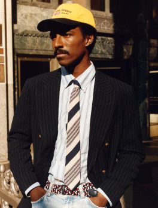
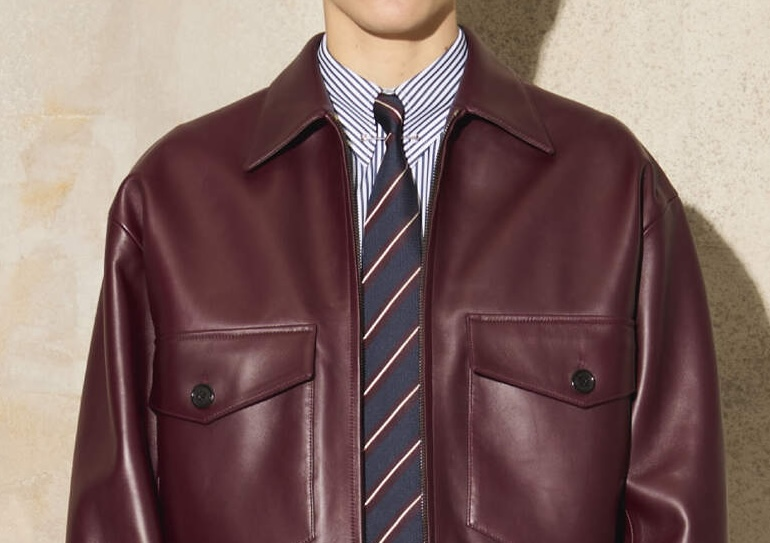
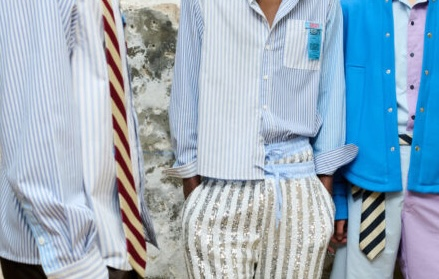
Clean, refined, and quietly confident. The Modern direction favours tonal solids, subtle pinstripes, and understated texture over pattern. Navy, teal, and burgundy form the core — designed for contemporary minimalism that pairs with double-breasted suiting and relaxed tailoring. Lightweight, high-quality materials in silk alternatives and sustainable blends.
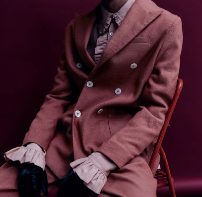
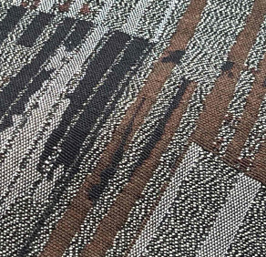
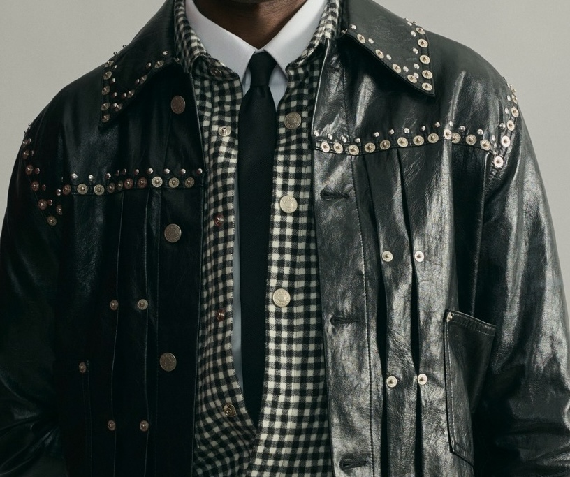
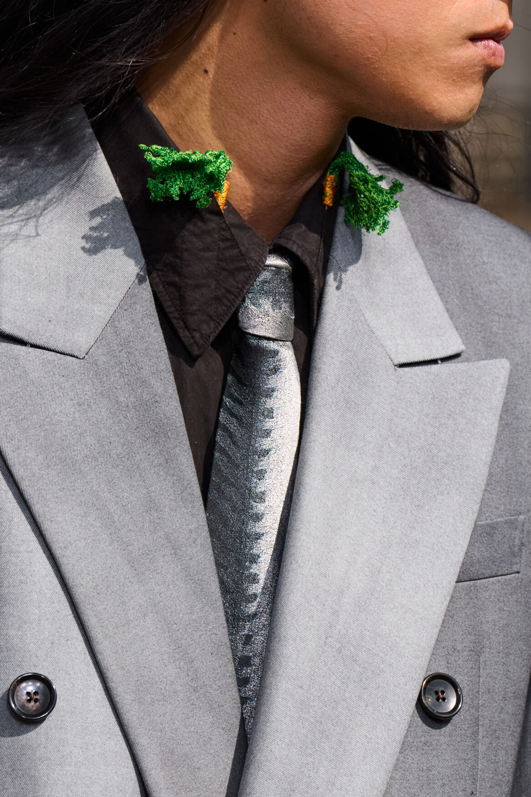
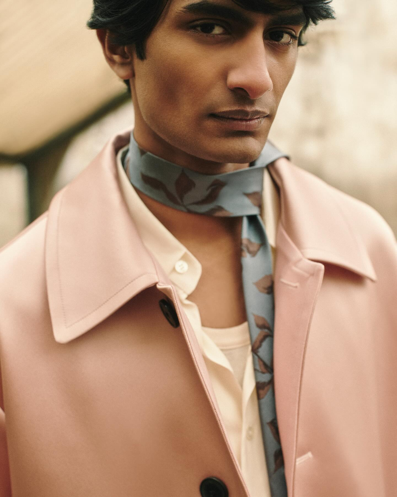